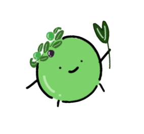

オ
リ
ー
ブ
検
定
MINI

OLIVE KENTEI
タップしてスキップ
オ
リ
ー
ブ
検
定
MINI
さあ、始めましょう！
モード（分野）を選択
オリーブの歴史編
栽培起源、小豆島植栽、人物、記念日など
オリーブの生態編
花・葉の性質、主要品種、気候適性、病害虫など
オリーブの加工編
新漬け製法、採油法、オイル規格、成分・健康効果など
出題数を選択
5問
10問
全問挑戦
検定をスタートする
リタイア
0
0
第 1 問 / 5問
問題文
正解！
解説文
次へ進む
80%
4 / 5 問 正解
称号
合格圏内！
しっかり基礎が身についています。
トップに戻る
確認
メッセージ
キャンセル
OK